Carbohydrates
1 Which of the following is a D-aldopentose?
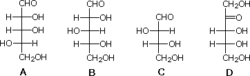
2. Which of the following is an L-saccharide?
3 (+)-Arabinose is (2R, 3S, 4S)-aldopentose. Which of the following is (+)-arabinose?
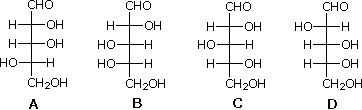
4 Which of the following gives an optically inactive aldaric acid on oxidation with dilute nitric acid?
5 Which two of the following compounds are reduced to the same chiral alditol by sodium borohydride?
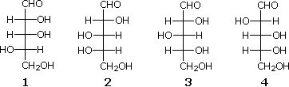
6 Which of the following statements is correct? A) The Ruff procedure lengthens an aldose chain and gives a single product. B) The Ruff procedure shortens an aldose chain and gives two epimers. C) The Kiliani-Fischer procedure shortens an aldose chain and gives a single product. D) The Kiliani-Fischer procedure lengthens an aldose chain and gives two epimers.
7 Which two of the following compounds, if any, are epimers?
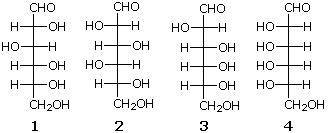
8 Which of the following is not a disaccharide? A) sucrose B) mannose C) lactose D) maltose
9 Which of the following is not a reducing sugar? A) sucrose B) mannose C) lactose D) fructose
10 Which two of the following aldohexoses give the same osazone derivative?
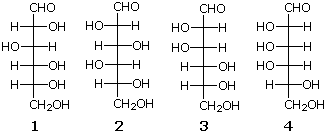
11 Which statement about the pyranose form of mannose is not correct? A) it exists as two anomeric stereoisomers. B) it reacts with Tollens' reagent to give a silver mirror. (i.e. it is a reducing sugars) C) reaction with excess CH3I and AgOH gives a non-reducing penta-O-methyl derivative. D) it resists reduction with aqueous sodium borohydride.
12 Two aldopentoses X and Y give the same osazone derivative. X is oxidized to an optically active aldaric acid by dilute nitric acid. Ruff degradation of Y gave a tetrose which was similarly oxidized to an optically active aldaric acid Assign the structures of X and Y from the following list?
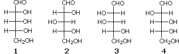
13 Which of the structures 1 through 4 is methyl α-D-galactopyranoside?
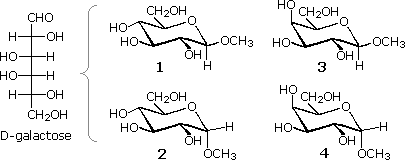
14 What is invert sugar, and why is it so named? A) the sugar mixture from hydrolysis of sucrose; fructose is isomerized to glucose. B) the sugar mixture from hydrolysis of sucrose; the optical rotation changes from (+) to (-). C) the sugar mixture from hydrolysis of starch; α-glycosidic bonds are changed to β-glycosidic bonds. D) the sugar mixture from hydrolysis of starch; glucose is isomerized to fructose.
15 Which of the following compounds is a β-aldopentafuranose?
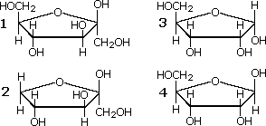
16 Which of the following compounds is a β-ketohexafuranose?
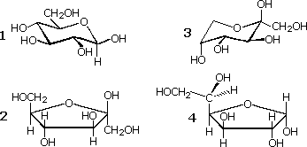
17 Which of the following disaccharides is the α-anomer of 4-O-( β-D-glucopyranosyl)-D-glucopyranose?
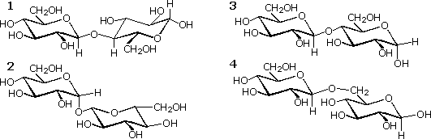
18 Which of the following disaccharides is a nonreducing sugar (does not react with Tollens' reagent)?
19 Which of the following best describes the polysaccharide amylose? A) a 1,4-O-α-linked poly-D-glucose B) a 1,4-O-β-linked poly-D-glucose C) an alternating 1,4-O-α/β-linked poly-D-glucose D) a 1,4-O-α-linked poly-D-mannose
20 Which of the following disaccharides is the β-anomer of 4-O-( β-D-glucopyranosyl)-D-glucopyranose?
21 Which of the following best describes the polysaccharide cellulose? A) a 1,4-O-α-linked poly-D-galactose B) a 1,4-O-β-linked poly-D-galactose C) a 1,4-O-α-linked poly-D-glucose D) a 1,4-O-β-linked poly-D-glucose
22 When octa-O-methyl D-cellobiose is hydrolyzed by aqueous acid, two O-methyated glucose derivatives are formed. One is a tetramethyl derivative, and the other is a trimethyl derivative. Why is a single methyl substituent lost in this process? A) one methoxy group is lost by β-elimination. B) one methoxy group is an ester and the others are all ethers. C) one methoxy group is part of an acetal, the others are all ethers. D) one glucose is an α-methyl glycoside; the other is a β-methyl glycoside.
23 Gentiobiose (C12H22O11) is a reducing sugar. It forms an osazone derivative and mutarotates. Hydrolysis of gentiobiose by the enzyme emulsin produces D-glucose as the only product. An octamethyl derivative of gentiobiose is hydrolyzed to a mixture of 2,3,4,6-tetra-O-methylglucose and 2,3,4-tri-O-methylglucose. What is the structure of gentiobiose (either anomer)?
24 Trehalose (C12H22O11) is a non-reducing sugar. Hydrolysis by the enzyme maltase produces D-glucose as the only product. An octamethyl derivative of trehalose is hydrolyzed to 2,3,4,6-tetra-O-methylglucose as the only product. What is the structure of trehalose?
25 Acid-catalyzed reaction of D-glucose with benzaldehyde produces the 4,6-O-benzylidene derivative. Reduction with NaBH4, followed by excess HIO4 cleavage and acid hydrolysis yields a C4H8O4 tetrose and benzaldehyde. What is the configuration of this tetrose? A) 2S, 3S B) 2R, 3S C) 2R, 3R D) 2S, 3R
26 A D-aldohexose gives an optically inactive aldaric acid on oxidation with nitric acid. Ruff degradation of this aldohexose produces an aldopentose that is reduced by NaBH4 to an optically active alditol. Which of the following is this hexose?
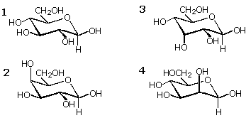
27 Mycarose is a rare C7H14O4 sugar found in some antibiotic natural products. Mycarose gives a positive Tollens' test, does not form an osazone derivative, and on exhaustive HIO4 oxidation gives HCO2H, CH3CHO and CH3COCH2CHO. Which of the following structures might be mycarose?
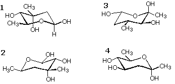
28 If two isomers have been classified correctly as anomers, they may also be called...? A) conformers B) enantiomers C) tautomers D) diastereomers
Amino acids and Proteins
29 Both cysteine and methionine are chiral L-amino acids that incorporate a single sulfur. The C-2 configuration is S in methionine, but R in cysteine. Why? A) biosynthesis of cysteine proceeds by inversion at C-2. B) the sulfur in cysteine prevents zwitterion formation. C) the sulfur atom in methionine is remote from C-2 and does not influence the sequence rule. D) the sulfur atom in cysteine is remote from C-2 and does not influence the sequence rule.
30 Threonine is (2S,3R)-2-amino-3-hydroxybutanoic acid. Which of the following is threonine?
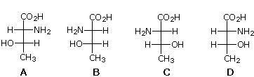
31 Which of the following is the major solute species in a solution of alanine at pH=2?
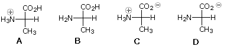
32 Which of the following is the major solute species in a solution of alanine at pH=6?
33 Which of the following is the major solute species in a solution of lysine at pH=10.8?
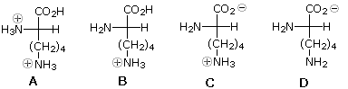
34 Which of the following is the major solute species in a solution of glutamic acid at pH=4.0?
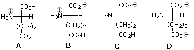
35 Ninhydrin reagent reacts with α-amino acids to give a purple color. In the the reaction of ninhydrin with phenylalanine, which of the following is responsible for this color?
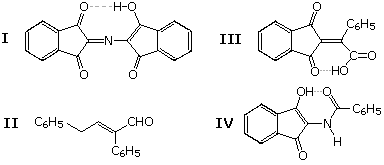
36 Which of the following statements most correctly defines the isoelectric point? A) the pH at which all molecular species are ionized and that carry the same charge. B) the pH at which all molecular species are neutral and uncharged. C) the pH at which half the molecular species are ionized (charged) and the other half unionized. D) the pH at which negatively and positively charged molecular species are present in equal concentration.
37 A tripeptide is composed equally of L-valine, L-tyrosine and L-alanine (one molecule of each). How many isomeric tripeptides of this kind may exist? A) three B) four C) six D) eight
38 Peptides are composed of amino acids joined by amide bonds. Which of the following statements is not correct? A) amide groups are more resistant to hydrolysis than are similar ester groups. B) p-π resonance stabilizes the amide bond. C) stable conformations of peptides are restricted to those having planar amide groups. D) amide groups do not participate in hydrogen bonding interactions.
39 The Strecker synthesis of α-amino acids begins with the reaction of an aldehyde with ammonium chloride and potassium cyanide. This is followed by an acid-catalyzed hydrolysis, that gives the amino acid. What functional group is hydrolyzed in the second step? A) an ester B) an nitrile C) an amide D) an imine derivative
40 The methyl and ethyl esters of many amino acids are sold commercially as their hydrochloride salts. Why are these derivatives not sold in the form of the neutral amino esters? A) the salts are solids, whereas many amino esters are liquids and are difficult to package. B) rearrangement to the N-alkylamino acid takes place. C) polymerization takes place by acylation of amine groups by an ester. D) an extra step in their preparation would be required.
41 You have a mixture of three amino acids: E (pI=3.2), Y (pI=5.7) & K (pI=9.7) Under electrophoresis at pH=7.7, in which direction will each component of the mixture move? A) E to anode; Y & K to cathode B) E to anode; Y stationary; K to cathode C) E to cathode; Y stationary; K to anode D) E & Y to anode; K to cathode
42 Sanger's reagent, 2,4-dinitrofluorobenzene, reacts with which functional groups in a peptide? A) free amino groups B) the phenolic hydroxyl group in tyrosine C) the aromatic heterocyclic rings of histidine and tryptophan D) the sulfide group of methionine
43 All the common amino acids, save one, react with cold nitrous acid (HNO2) and evolve nitrogen gas. Which of the following amino acids is that compound? A) cysteine B) proline C) histidine D) arginine
44 The amino acid cysteine often forms a disulfide bond with another nearby cysteine. How is this reaction best classified? A) an addition B) a substitution C) an oxidation D) a reduction
45 A hexapeptide has the composition Ala,Gly,Phe,Val3. Both the N-terminal and C-terminal units are Val. Cleavage of the hexapeptide by chymotrypsin gives two different tripeptides, both having Val as the N-terminal group. Among the products of random hydrolysis is a Ala-Val dipeptide fragment. What is the primary structure of the hexapeptide? A) Val-Gly-Phe-Val-Ala-Val B) Val-Ala-Phe-Val-Gly-Val C) Val-Gly-Ala-Val-Phe-Val D) Val-Phe-Val-Ala-Gly-Val
46 An octapeptide has the composition Ala2,Gly2,Phe2,Ser2. The N-terminal unit is Ala. Cleavage of the octapeptide by chymotrypsin gives a single tetrapeptide, having Ala as its N-terminal group. Among the products of random hydrolysis is a Phe-Ala-Gly tripeptide fragment. What is the primary structure of the octapeptide? A) Ala-Gly-Ser-Phe-Phe-Ser-Gly-Ala B) Ala-Ser-Gly-Phe-Ala-Gly-Ser-Phe C) Ala-Ser-Gly-Phe-Ala-Ser-Gly-Phe D) Ala-Gly-Ser-Phe-Ala-Gly-Ser-Phe
47 Peptide bond formation from protected amino acid reactants is often carried out with which reagent? A) p-toluenesulfonyl chloride B) di-t-butyl dicarbonate C) dicyclohexylcarbodiimide D) benzyl chloroformate
48 What reagent is used in the Edman degradation for N-terminal group analysis of peptides? A) phenyl isothiocyanate B) di-t-butyl dicarbonate C) dicyclohexylcarbodiimide D) benzyl chloroformate
49 Which of the following methods selectively cleaves a peptide at methionine residues? A) trypsin digestion. B) cyanogen bromide. C) chymotrypsin digestion. D) Edman degradation.
50 Which of the following is not an important secondary structural feature in large peptides and proteins? A) the α-helix. B) the β-turn. C) chair conformations. D) the β-pleated sheet.
51 Which of the following statements is true for phenylalanine in an aqueous solution at pH = pI? A) the nonpolar, neutral species C6H5CH2CH(NH2)CO2H is the most abundant solute. B) the concentrations of [+] and [-] charged molecular ions are equal. C) racemization is rapid. D) this condition is impossible, since pH can never equal pI.
52 Which of the following factors has the least influence on the secondary and tertiary structures of proteins? A) the achiral nature of glycine units. B) steric hindrance of bulky side-chains on the peptide backbone. C) hydrogen bonding of C=O to N-H groups located near each other in space. D) conformational restriction imposed by proline units.
53 From the reagents in the following table, select the one best used to cleave peptide chains at Arg and Lys residues.
54 From the reagents in the following table, select the one used in a color test for amino acids.
Lipids
55 Fatty acids are important components of many lipids. For which of the following lipid classes or lipid derivatives are fatty acids not a significant component? A) phospholipids B) triglycerides C) waxes D) steroids
56 Which of the following is a general characteristic of those natural products classified as lipids? A) they are generally insoluble in water and soluble in organic solvents. B) they are generally soluble in water and insoluble in organic solvents. C) they have the common structural feature of two or more fused carbon rings. D) they generally have a high weight proportion of oxygen (>40%).
57 Which of the following would be classified as a sesquiterpene?
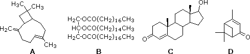
58 Which if any of the following is a triglyceride?
59 Which of the following statements about glyceryl tripalmitate, 1,2,3-propanetriol tris(hexadecanoate), is not true? A) it is reduced to 1-hexadecanol by lithium aluminum hydride B) it is achiral C) it has a higher melting point than glyceryl trioleate D) it adds bromine
60 Counting both constitutional and stereoisomers, how many isomeric triglycerides incorporating one oleic acid and two stearic acid groups exist? A) one (there are no isomers) B) two C) three D) four
61 Which statement comparing the soap. sodium stearate, and the detergent sodium lauryl sulfate is not true? A) both form micelles in water dispersion. B) at pH below 6.5 the soap precipitates, the detergent does not. C) the soap is less alkaline (basic) than the detergent. D) calcium salts of the soap are relatively insoluble.
62 Which of the following would be classified as a prostaglandin?
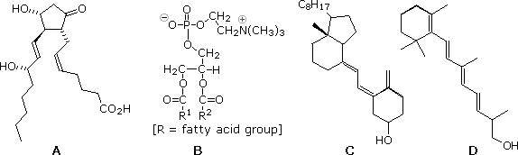
63 Which of the following is vitamin A?
64 Spermaceti, C32H64O2, is a substance found in the head of the sperm whale. It displays a strong infrared absorption at 1735 cm-1 LiAlH4 reduction of spermaceti gives a single C16H34O alcohol What class of lipids does spermaceti belong? A) triglycerides B) waxes C) terpenes D) trans-fatty acids
65 Cembrene, a C20H32 hydrocarbon, has a UV λmax=240 nm. Exhaustive addition of hydrogen (Pd catalyst) gives 4-isopropyl-1,7,11-trimethylcyclotetradecane. Ozonolysis of cembrene with a Zn dust workup yields eqimolar amounts of CH3COCH2CH2CHO, CH3COCHO, CH3COCH2CH2CH[CH(CH3)3]CHO & CH2(CHO)2 Which of the following is a plausible structure for cembrene (double bond configurations are not specified)?
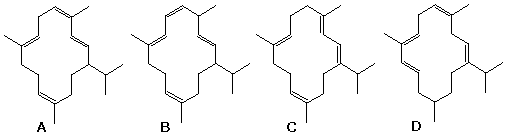
Nucleic Acids
66 Which of the following is not a common component of both DNA and RNA? A) ribose B) phosphate C) cytosine D) adenine
67 Which of the following is not a component of RNA? A) adenine B) phosphate C) cytosine D) thymine
68 Which of the following is purine base? A) guanine B) indole C) cytosine D) thymine
69 Which of the following is a pyrimidine base? A) imidazole B) guanine C) cytosine D) adenine
70 The H-bonded base pair shown on the right represents which of the following?
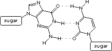
71 Which of the following is a nucleoside?
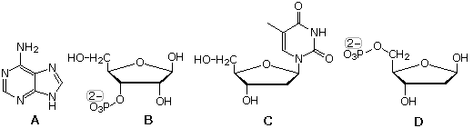
72 In DNA replication the complementary nucleotide sequence for 5'-ACGT-3' is which of the following? A) 3'-ACGT-5' B) 3'-TGCA-5' C) 5'-AGCT-3' D) 5'-TCGA-3'
73 What is the complementary RNA sequence for the DNA segment AATCAGTT? A) AAUCAGUU B) CCAUCGAA C) AACUGAUU D) UUAGUCAA
74 How many nucleotides are needed to code for a specific amino acid? A) one B) two C) three D) four